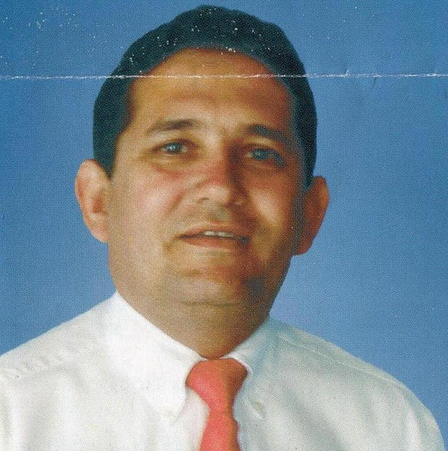
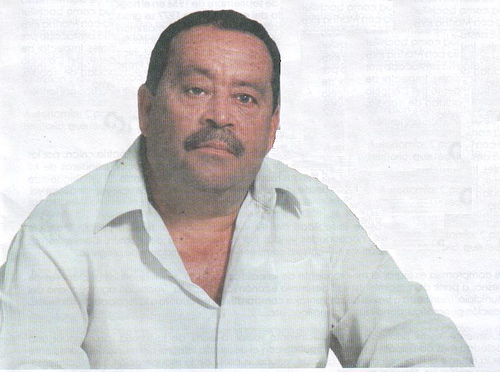
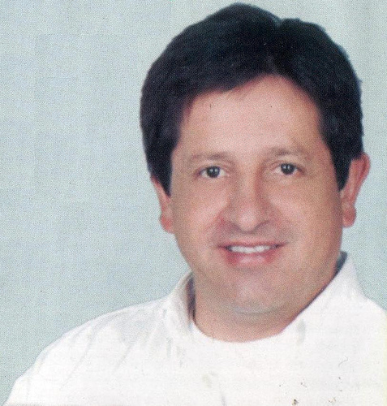

JORGE ORLANDO FRANCO DELGADO

Nació El 27 de Octubre de 1972 en Fresno Tolima Casado con
Mediante el presente escrito dejo consignados los puntos más importantes del Programa de Gobierno que he venido proponiendo a la comunidad FRESNO UN MUNICIPIO VIABLE En los tiempos modernos y dadas los avances en tecnología, la familia se ha rezagado a un segundo plano, olvidando que ella en cualquier parte del mundo, constituye la base de la sociedad y es el fundamento esencial de un estado de derecho. Como tal, rescatar sus valores, fortalecer los lazos familiares, propender por su unidad e integración, serán temas prioritarios en mi administración. Para ello fortalecerl
EDUCACION CON CALIDAD Hoy se habla mucho de cobertura total de la educación en nuestra población, pero muy poco se esta haciendo por la calidad de la misma, por ello concertaré con toda la comunidad educativa del municipio, es decir, padres de familias, docentes, personal administrativos y alumnos y programa especial, que permita mejorar los estándares de la calidad de la educación en nuestro municipio. Igualmente y atendiendo a la capacidad financiera del municipio procurare las siguientes obras complementarias. Implementación de centros educativos con vocación agrícola y deportiva. Creación de la sala de sistemas municipal, para la capacitación permanente, no solo a la comunidad educativa, sino también a toda nuestra gente. Establecimiento de la educación superior de forma continua y permanente. Dotación, mantenimiento y equipamiento permanente de las instituciones educativas, tanto rurales como urbanas.
Salud PARA
FRESNO POLO DE DESARROLLO: Dada nuestra ubicación geográfica y atendiendo a las nuevas necesidades de nuestro país, frente al mercado de libre comercio, debemos miar con proyección el futuro de nuestro municipio. La construcción de la vía de doble calzada entre Bogotá y Honda, dará unas grandes posibilidades de desarrollo a todo el norte del Tolima y muy especialmente a nuestro municipio. Por ello, presentaré al Concejo Municipal un proyecto de acuerdo, que exonere hasta por 10 años del pago del impuesto de industria y comercio, a todas aquellas personas naturales o jurídicas que establezcan nuevas industrias, empresas y microempresas en nuestro municipio, atrayendo de esta manera nuevos inversionistas y la generación de nuevos empleos. Parcialmente se deberá buscar el estudio de cual es el potencial turístico de Fresno, como un renglón nuevo a explotar en nuestra economía.
GUSTAVO CASTAÑO GIRALDO

Biografía Nació el 24 de septiembre de 1956 en el hogar de Carmen Rosa y Gustavo Castaño (papa), graduado en 1977 como bachiller académico en el colegio San José de Fresno, contrajo matrimonio con la señora Martha Ríos González con la cual tuvieron dos hijos Angélica Maria Y Gustavo Adolfo. Su perfil profesional lo ha destacado en el municipio como inspector de policía en el corregimiento del Tablazo, Inspector de Obras Municipales, Inspector de Caminos municipales, presidente del concejo municipal de fresno en el periodo de 2004 – 2007. Es ampliamente reconocido por su capacidad de trabajo y de liderazgo en la generación de empleo, espíritu emprendedor y vocación de servicios.
PROGRAMA DE GOBIERNO
VISION: En el año 2011 Fresno será un territorio líder, comprometido con el desarrollo Económico, social y humano, que propicie la sostenibilidad económica, alimentaría y de los recursos naturales, que garantizara altos niveles de vida a su población, promoviendo la participación activa en la comunidad, la garantía de los derechos y la convivencia pacifica.
MISION: Presta los servicios públicos que determine la ley, construir las obras que demanden el progreso local, ordenar el desarrollo de su territorio, promover la participación comunitaria, el mejoramiento social y cultural de sus habitantes en procura de mayores para la comunidad de FRESNO.
Programas: Afiliación de la población l y ll al régimen subsidiado manteniendo la comunidad y ampliando la cobertura.
Ejecución de programas de promoción y prevención de salud publicas como campañas de vacunación a la población, desarrollo de campañas de capacitación, Nutrición a la población infantil, programas de saneamiento básico entre otros de al PLAN DE ATENCION BASICA del municipio.
Mejoramiento de los servicios y la atención en el hospital SAN VICENTE DE PAUL. Gestionar la ampliación del poll de médicos y personal especializado en el hospital SAN VICENTE DE PAUL. Gestionar la aprobación de ejecución de procedimientos de nivel tres (partos y operaciones de bajo riesgo) en las instalaciones del hospital SAN VICENTE DE PAUL.
LUIS EDUARDO VALLEJO SOTO

Nació en Fresno Tolima el 3 de Junio de 1963, es casado con la psicóloga Liliana Navarro con la cual tienen 2 hijos Daniel Vallejo y Laura Vallejo, Graduado en el colegio Maria Auxiliadora, es abogado.
Tiene un negocio de compra de Café y venta de abonos.
Programa de gobierno Sector Administrativo Financiero e Institucional
· Reorganizar la estructura orgánica del Municipio, en secretarias y divisiones, dirigidas por funcionarios con perfiles idóneos, con experiencia y con criterios técnicos, eficientes y honestos.
· Dentro del palacio municipal y por fuera del palacio municipal se establecerá reuniones de Juntas de acción comunal y comunitaria de atención con el fin de atender las solicitudes de interés general.
· El alcalde con su gabinete se trasladara a los sectores rurales para dar desde allí atención directa a las inquietudes de la comunidad. · Estructuración, reorganización de la oficina de contratación, convenios y suministros.
· Puesta en marcha del Banco Municipal de Proyectos para la ejecución eficiente de los recursos de inversión. · Decretaremos la prescripción de cartera antigua · Propondremos incentivos tributarios para la recuperación de la cartera · Se realizará reinversión del impuesto recuperado en un 50% en las necesidades sociales del entorno donde se causa el mismo. Equipamiento Municipal · Convertiremos la infraestructura de la plaza de mercado, en una central de abastos minorista y mayorista, que permita a productores y microempresarios, generar servicios que logren en efector regulador y de acceso a la población mas pobre y a la vez, el productor pueda mejorar los precios a través de una justa negociación.
· Bomberos sin burocracia y con dotación · Vías rurales con responsabilidad municipal: será prioridad gestionar la dotación y repotenciación de maquinaria y vehículos, para establecer un verdadero y permanente plan de atención y mantenimiento de vías rurales. Sector Educación · Estructurar una verdadera secretaria de Educación Municipal, para una técnica y eficiente administración que permita, gestionar con eficiencia el cubrimiento total de docentes de planta, dando prioridad de nombramiento a los docentes que se encuentran vinculados actualmente en provisionalidades a través de cooperativas. · Apropiar recursos provenientes de transferencias de la nación y de los impuestos locales que permitan subsidiar el transporte digno y seguro el refrigerio escolar en el sector rural hasta lograr cubrir gradualmente, el 100% de los costos ocasionados. · Diseño e implementación del programa “Escuelas adecuadas, Bellas y saludables”.
· Bancos de Textos escolares por salón, dotación de textos educativos y material didáctico por área de estudio, a cada institución educativa y por cada grado escolar. · Creación de Centros Comunitarios de Educación Superior, lograr alianzas con las instituciones educativas de educación superior, privadas y el gobierno nacional.· Educación sin limites, jornadas escolares especiales y de sensibilización que permitan el acceso a la educación a aquellos jóvenes y adultos que desempeñen actividades productivas. · Incentivar y sensibilizar a docentes, padres de familia y alumnos de las Instituciones Educativas Rurales, para adoptar modalidades que tengan que ver con el desarrollo administrativo, agrícola, pecuario y agroindustrial. · Cátedra sobre participación en la Administración Publica Municipal· Fortalecer y apoyar técnica y logísticamente a las Instituciones Educativas. Sector Salud
· Concertar con la parte administrativa, empleados y usuarios, estrategias que permitan una eficiente, adecuada, permanente y humanizada atención a los enfermos de urgencias y consulta externa.
· Diseñar una base de datos que permita al Hospital, consultar la población cubierta por el régimen vinculado, facilitando la atención o remisión al paciente de este régimen que lo requiere, implementando en lo rural y en los barrios periféricos la adjudicación de citas telefónicas, evitando que los pacientes deban llegar a horas de la madrugada a separar su turno.
· Medicina especializada, comunitaria y con sentido social · Registro y cubrimiento del total de los residentes de cada Barrio o Vereda, que no estén vinculados al régimen contributivo y subsidiado.· Organizar y estructurar la secretaria municipal de Salud · Revisar cuidadosamente para que los beneficios del Régimen vinculado al subsidio, estén favoreciendo a las personas que realmente lo necesitan. · PAB con eficiencia e idoneidad · Descentralización de la salud. Sector agua potable y saneamiento básico · Reiniciar e implementación del programa de potabilización del agua. · Agua sin racionamiento: optimizar y mejorar las fuentes de agua, redes de conducción y distribución del acueducto municipal para garantizar el suministro permanente. · Ampliación capacidad antigua planta tratamiento · Mantenimiento y reforzamiento de la estructura del tanque de almacenamiento. · Agua para todos · Reconstrucción y mantenimiento sectorial del sistema de alcantarillado urbano.
· Canalización de aguas residuales · Se establecerán convenios que permitan la construcción de pozos sépticos · Plan de conservación y reforestación Municipal de cuencas hidrográficas. Sector Deporte, Recreación y Turismo
· Apoyar la conformación y legalización de clubes y ligas deportivas para el sector urbano y rural.
· Deporte y recreación sin burocracia, recursos que permitan financiar masivamente, eventos de capacitación, practica del deporte y recreación a todo nivel.
· Recuperación del Centro Deportivo “Alto del Cielo”, convirtiéndolo en un parque temático.
· Gestión de recursos para la viabilidad de construcción de un parque infantil y recreativo en el lote ubicado en el bario el carmen. · Institucionalización de la Olimpiadas Municipales que integren los deportistas urbanos y rurales.· Se implementara dentro de la administración municipal, funciones y actividades que permitan iniciar un inventario de sitios turísticos, históricos y fincas que se puedan adaptar para paquetes de agroturismo y ecoturismo. Sector Cultura y actividades artísticas · Construcción de un centro cultural que tenga verdadera capacidad para fomentar y desarrollar actividades artísticas y culturales. · Biblioteca y Museo de
· Organización de brigadas culturales que tengan con fin integrar a las comunidades del sector urbano y rural. · Rescatar el patrimonio urbanístico y arquitectónico del municipio. · Desarrollar una gran campaña de educación ciudadana, que rescate la identidad cultural y proponga un programa de recuperación de valores en todos los actos que desarrollen los ciudadanos. · Apoyo financiero para EXPOAGRO,
· Mejorar la calidad de vida de los niños y los jóvenes en área rural y urbana · Revisar los beneficios de seguridad alimentaría y familias en Acción con destino a los niños de bajos recursos. · Crear el concejo juvenil Municipal para promover acciones deportivas, culturales de prevención contra las drogas, alcoholismo, sida, embarazos a temprana edad. Sector Tercera Edad
· Ancianato sin crisis. Optimizar el apoyo financiero, técnico y administrativo al hogar del anciano
· Implementar un programa de seguridad alimentaría, realización de eventos lúdicos y recreativos, dirigido a las personas de tercera edad. · Subsidio de la tercera Edad. · Asociación de discapacitados a nivel municipal con apoyo financiero
· Fomentar las actividades deportivas con el fin de integrar a la población discapacitada, permitiendo su integración al medio social y recreativo.